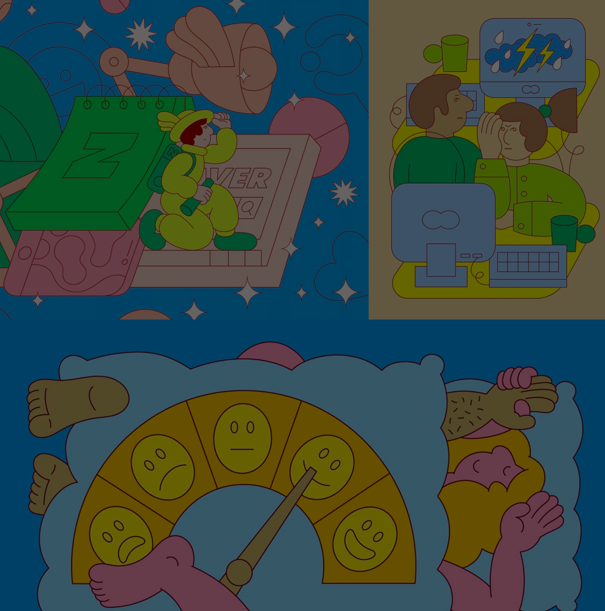

<!DOCTYPE html>
<html lang="en">
<head>
    <meta charset="UTF-8">
    <meta name="viewport" content="width=device-width, initial-scale=1.0">
    <title>Ecovision</title>
    <link rel="stylesheet" href="css/style.css">
    
</head>
    <section class="hero2">
        
        
    </section>
    </body>
    </html>
  

  <!-- Header -->
  <header>
    <div class="logo-container">
        <a href="artisti.html" class="logo-link">
            <div class="freccia1">
                
            </div>
            <div class="logo">visioni illustrate</div>
        </a>
    </div>

    <nav>
        <ul class="nav-links">
            <li><a href="index.html">HOME</a></li>
            <li><a href="artisti.html">ARTISTI</a></li>
            <li><a href="mostra.html">MOSTRA</a></li>
            <li><a href="info.html">INFO</a></li>
        </ul>
        <div class="menu-toggle">&#9776;</div>
    </nav>
</header>

   <!-- Contenuto Principale -->
    <main class="main-wrapper">

        <div class="testo-p"></div>
        <p>
            <span class="evidenziato">MARTINA PAUKOVA</span>
          </p>
        <p>
            L'illustratrice berlinese Martina Paukova ama dilettarsi nelle sfumature colorate dei momenti quotidiani. "Il mio lavoro consiste in scene banali quotidiane e personaggi allampanati, spesso con espressioni perplesse e acconciature datate, seduti dietro al computer o sorseggiando un caffè", dice. "Mi piace esplorare e modellare il quotidiano, l'imbarazzante e il flessibile." Il lavoro di Martina è diventato molto popolare negli ultimi due anni, vedendola creare immagini divertenti e piene di sorprese in una tavolozza di marchi con motivi ispirati a Memphis per un elenco sempre più impressionante di clienti. In precedenza, Martina ha studiato politica in Slovacchia prima di cambiare direzione per studiare illustrazione al Camberwell College of Arts di Londra. Ora trascorre le sue giornate su varie commissioni editoriali e commerciali, iniettando personalità in un'immagine in un modo che è unicamente suo. Come una moderna MC Escher, le sue prospettive colorate e bizzarre si muovono e cambiano, con ogni elemento che si incastra insieme come un puzzle ben realizzato.    
        </p>


       
    </main>

<div class="sfondo"> 

</div>

      
    <!-- Footer -->
      <footer>
        <div class="social-icons">
            <a href="https://www.abacatania.it/" target="_blank">
                
            </a>
        </div>
      
        <div class="footer-links">
            <a href="https://www.privacypolicies.com/live/">Privacy</a> | <a href="https://www.termsfeed.com/contact/">Contatti</a> | <a href="https://www.copyright.gov/">Copyright</a>
        </div>
    </footer>

    <script>
        // Menu mobile toggle
        document.querySelector('.menu-toggle').addEventListener('click', function() {
            document.querySelector('.nav-links').classList.toggle('active');
        });
    </script>

</body>
</html>